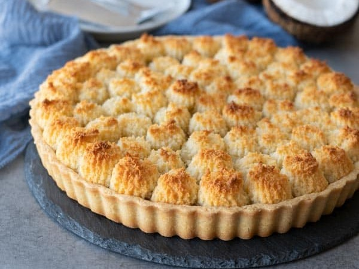

Coconut & Dulce de Leche Tart

This Argentine style coconut and dulce de leche tart is perfect and a must try for all the coconut and dulce de leche lovers!
Flaky crust, generous layer of delicious dulce de leche and aromatic golden brown bits of coconut. Yum!
Author: Bea & Marco
Ingredients
The Crust
- ½ cup butter (113 g), room temperature
- 3 tablespoon sugar (35 g)
- 1 large egg , room temperature
- zest of ½ lemon
- ½ teaspoon vanilla extract
- 1 ½ cup all purpose flour (195 g)
The Filling
- ⅔ cup sugar (130 g)
- 3 large eggs
- 1 teaspoon vanilla extract
- ⅔ cup whipping cream, min 35% fat (160 ml)
- 3 cup unsweetened fine desiccated coconut (240 g)
- 1 lb bakers dulce de leche (450 g), or to your liking
Steps
The Crust
- Add both butter and sugar into a bowl and mix well using a spatula. Now add in egg, lemon zest, vanilla extract and continue mixing.
- Finally add in flour and fold everything together to combine, don't over mix it. You will have a sticky dough, no worries.
- Place dough on a cling film, wrap and flatten it into ½ inch (1.3 cm) thickness. Place it in the freezer for 20 minutes or until it stiffened enough to manage. Meanwhile, let's prepare the filling.
The Filling
- Into another bowl, add in sugar, eggs and vanilla extract. Whisk to combine. Now add in whipping cream and mix well. Finally add in desiccated coconut and give it one final mix.
- Chill in the fridge for 40 minutes.
Assembling
- After 20 minutes, place the stiff dough in between 2 cling films. Roll into a circle that's slightly bigger than 9 inch (23 cm) tart pan with a removable bottom.
- Remove the top cling film and sprinkle some flour on the dough. Swiftly and confidently flip the dough into the tart pan, floured side down. Rearrange the dough as you need and cut off the excess bits.
- Place back in the freezer for 10 minutes.
- After 10 minutes, remove the pan from the freezer and pipe the dulce de leche in. Use an offset spatula to even it out. Now pipe the filling on top, making sure to cover all the dulce de leche surface.
- Bake in a preheated oven at 350ºF (175ºC) on the lowest rack for 45 minutes or until the top is golden brown. Cool completely before slicing (you'll get a cleaner cut) and enjoy! Note: Serve this with mate (Argentine herb tea) for maximum enjoyment!
Freezer Or Fridge (not to get confused)
- Freezer is where you keep the frozen things.
- Fridge is where you keep all your fresh veggies, milk and etc.
Notes
- Use fine-textured desiccated coconut. Coarse ones will make it difficult to pipe later.
- Use whipping cream that's not whipped, or else your filling will be too dry.
- Make sure to chill the filling in the fridge so that the desiccated coconut has the time to absorb the liquid and gets "firmer" to pipe later.
- If your filling is still runny, leave it in the fridge for a few minutes longer (refer to the tutorial video above for the final texture).
Nutrition Facts
- Calories: 406.9kcal
- Carbohydrates: 33.2g
- Protein: 5.6g
- Fat: 29.2g
- Saturated Fat: 21.7g
- Cholesterol: 91.8mg
- Sodium: 97.7mg
- Potassium: 177mg
- Fiber: 4.1g
- Sugar: 17g
- Calcium: 28.7mg
- Iron: 1.8mg